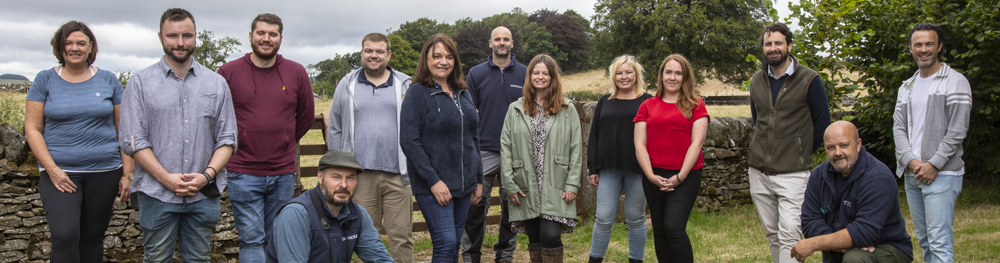

100 year Biodiversity bid for South of Scotland gets boost from HSBC UK
- HSBC UK partners with National Trust for Scotland on the biggest project ever to restore wetlands and woodlands in South of Scotland
- Measures tackle the climate crisis by restoring degraded habitats and maintaining and creating new carbon stores
- Images and video: National Trust for Scotland and HSBC UK employees recently visited the site to see how the environment has improved even in the first few months of the project 1
An ambitious, century-spanning conservation project to restore habitats in Dumfries and Galloway has received a major boost today, as HSBC UK has come on board to support the National Trust for Scotland’s pioneering work.
The banking and financial services organisation has pledged a significant donation to the Threave Landscape Restoration Project which will transform 81 hectares of land at Kelton Mains, part of the charity’s Threave Estate in Dumfries and Galloway, into rich habitats for flora and fauna.2
Over the coming months, more than 4000 redundant fenceposts will be removed opening up the site visually, 125 metres of boardwalk will be laid enabling people to explore the area’s wetlands in a whole new way, and a herd of Belted Galloway shepherded by GPS will graze the site in a trial to explore how sustainable livestock management can be balanced with nature recovery.
Philip Long OBE, Chief Executive of the National Trust for Scotland said: “In our 90th year, our charity’s work to protect Scotland’s special places has never been more urgent. Throughout 2021, we’ve all seen the impact of the climate crisis whether that’s through record temperatures or rainfall. This puts into sharp relief the need for action. We all have a responsibility to work together to care for the places, the habitats and the habits that can help ensure our heritage survives for future generations. We’re grateful to HSBC UK for joining us in these efforts.”
The gift is part of HSBC’s new global Climate Solutions Partnership, which aims to unlock barriers to finance for companies and projects that tackle climate change.3
Ian Stuart, Chief Executive of HSBC UK said: “A challenge as significant as climate change can only be tackled in collaboration, and we are very excited to welcome National Trust for Scotland to the global Climate Solutions Partnership.
“Nature-based solutions can provide a third of the global climate mitigation needed by 2030, protecting nature as well as meeting people’s needs. Our ambition is to help open the door for National Trust for Scotland to explore new areas of agroforestry management and how nature-based solutions are being scaled and delivered to tackle climate change internationally.”
Sam Gallacher, the Trust’s Operations Manager at Threave said: “Every action that we take as part of this project is an action that contributes to the fight against climate change. All these interventions, from restoring the wetlands, to planting trees and encouraging the return of native flora, encourages a natural process that captures carbon and that’s what the world needs right now.”
Data gathering and information sharing are also integral to the project, as the Trust aims to share its experience globally.
Support for this phase of the project comes from the Galloway Glens Landscape Partnership Scheme, the National Lottery Heritage Fund and HSBC UK.
Ted Leeming, Chair of the Galloway Glens Landscape Partnership, said: “The Galloway Glens scheme is absolutely delighted that HSBC UK is joining the Threave Landscape Restoration Project. As our funding cycle ends, seeing this new investment and support from HSBC UK come to our region could not be a better testament to the value of this project and what we have achieved together with National Trust for Scotland.”
Regular updates on the progress of the project will be posted online at
.
Editor’s Notes:
1Photo & video caption: Local HSBC UK staff recently visited Threave Estate to get an introduction to the area and the Trust’s ambitions for the project. They saw evidence of early progress and how allowing the grass to go to seed is already improving the biodiversity after just a few months.
2About the Threave Landscape Restoration Project
The project, one of the largest currently underway by the conservation charity, will re-establish wetlands by ‘undraining’ the land, allowing the River Dee and its floodplain to revert to more natural flow patterns, providing habitats for a wide range of native and migrant waterfowl, and many other species too. It will also reintroduce native woodland species, with the ultimate ambition to create a 30-hectare native woodland
3The is a global initiative led by HSBC, World Resources Institute and WWF, and forms part of .
About National Trust for Scotland
The National Trust for Scotland is the conservation charity that over 90 years has saved, maintained and shared many of the country’s most loved places, rich with history, heritage, nature and culture. The charity celebrates Scotland’s heritage and with more than 100 places in its care, there’s a place for everyone to love.
The National Trust for Scotland relies on the support of its members and donors to carry out its important work of caring for the natural and built heritage that people from Scotland and across the world all love, ensuring its future for everyone to enjoy.
Support the National Trust for Scotland and help them protect the places we all love. Become a member at .
About HSBC UK
HSBC UK serves around 15 million customers across the UK, supported by 26,000 colleagues. HSBC UK offers a complete range of retail banking and wealth management to personal and private banking customers, as well as commercial banking for small to medium businesses and large corporates.
HSBC Holdings plc, the parent company of HSBC, is headquartered in London. HSBC serves customers worldwide from offices in 64 countries and territories in its geographical regions: Europe, Asia, North America, Latin America, and Middle East and North Africa. With assets of US$2,976bn at 30 June 2021, HSBC is one of the world’s largest banking and financial services organisations.